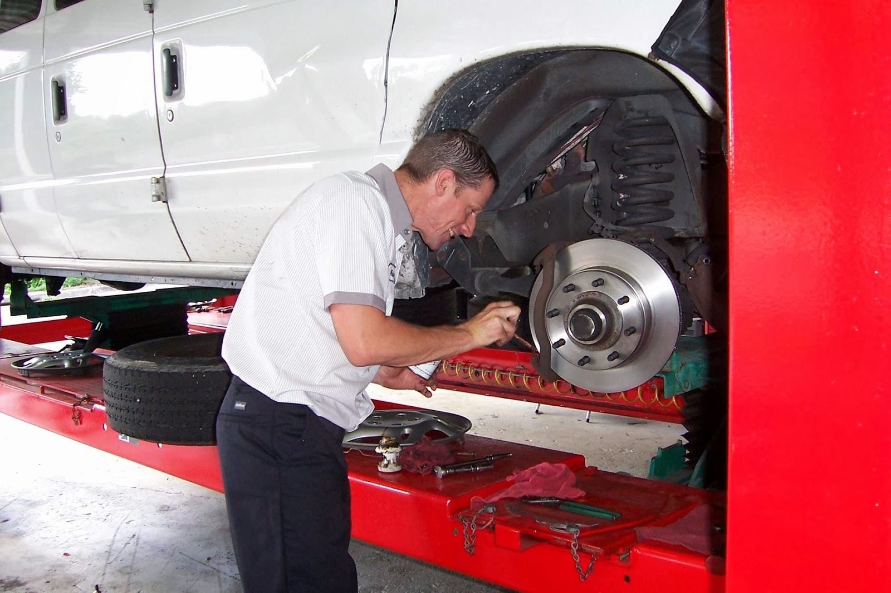
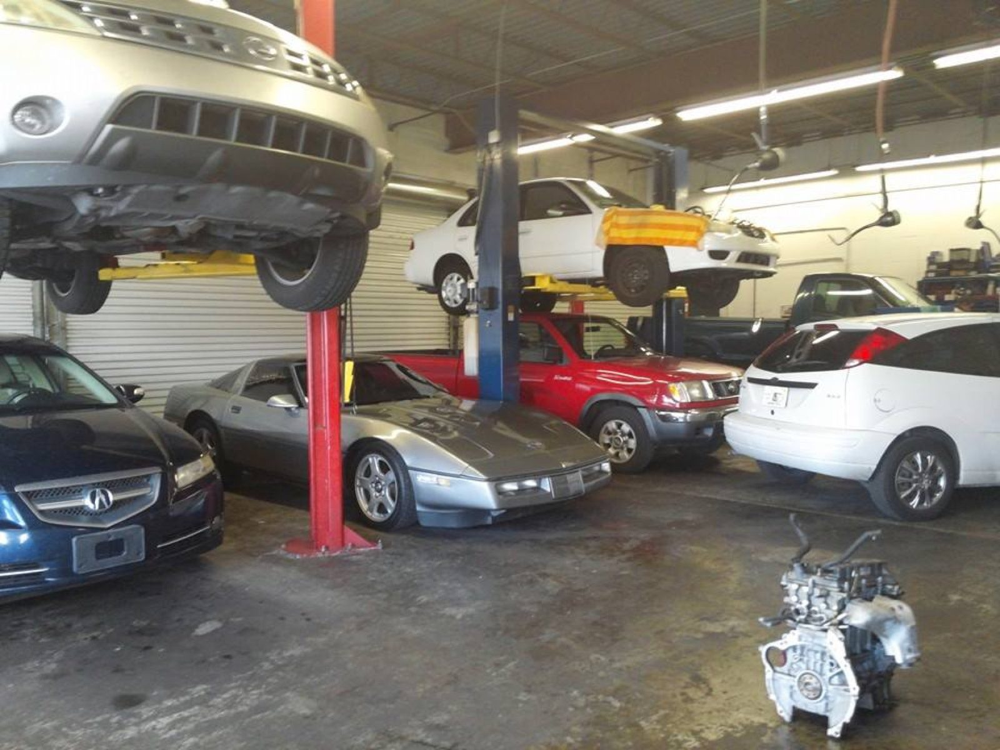
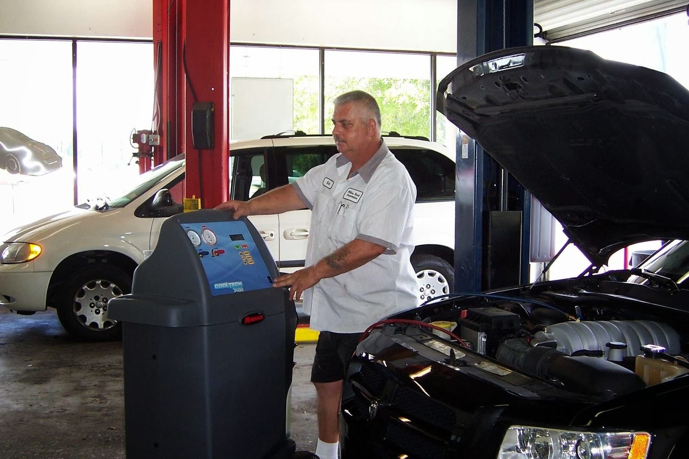
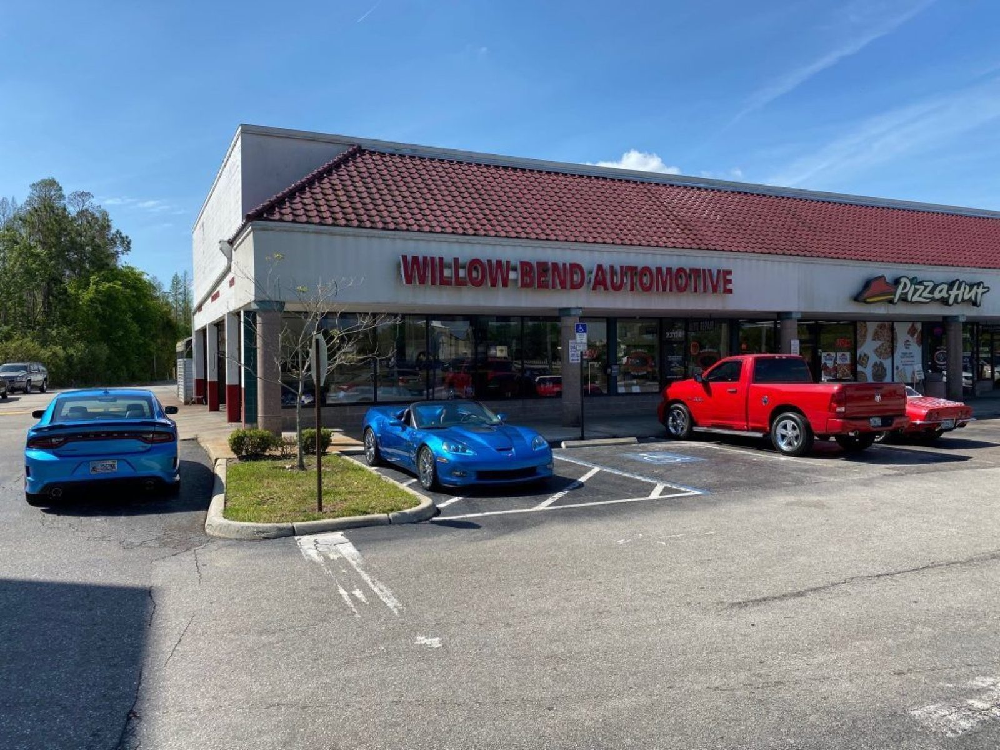
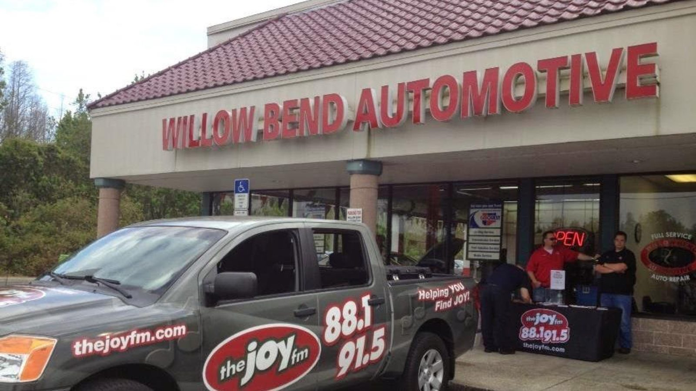
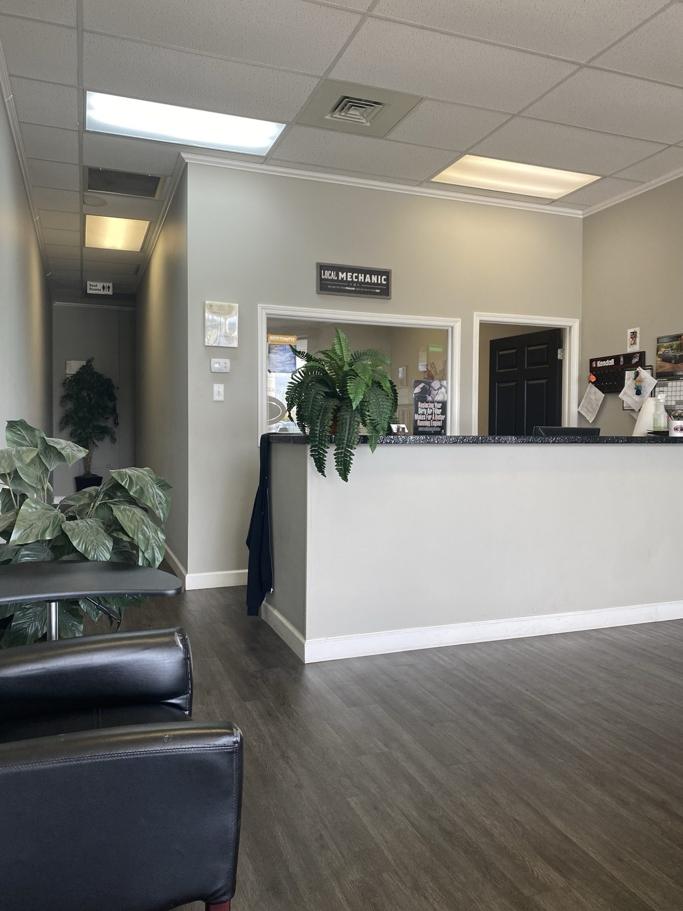
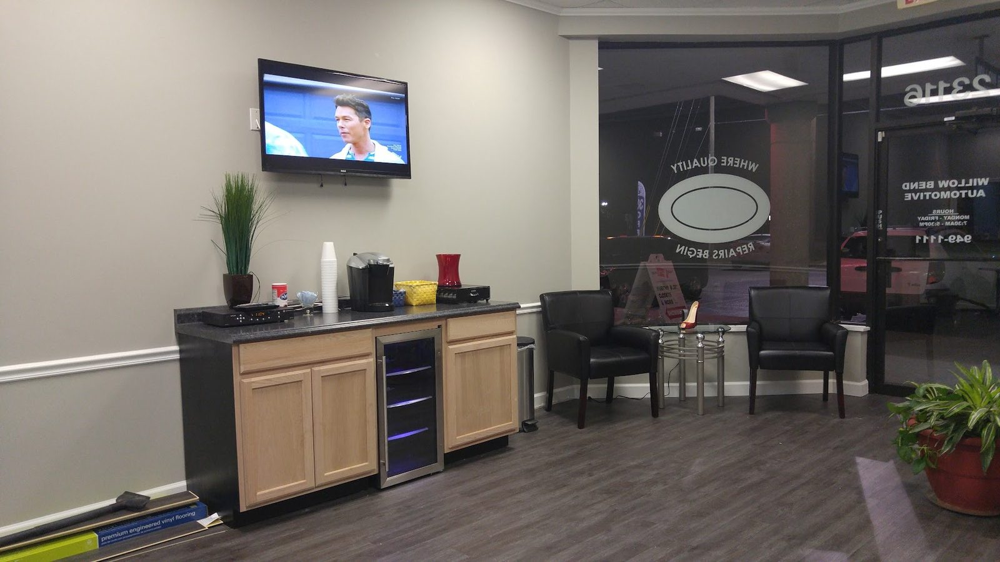

Auto repair · Lutz, FL
Auto repair on State Road 54, since 2004.
All makes and models, plus new tires.
Willow Bend Automotive

JOB ESTIMATE
- Brakes✓
- A/C✓
- Batteries✓
- Tires✓
- Alignment✓
- Oil change✓
TOTALWE CALL FIRST
** ASE Certified technicians **
4.8/5 · 692 Google REVIEWS
THANK YOU. COME AGAIN.
Itemised
What we fix
Maintenance and repairs, from tires to transmissions.
Willow Bend
SERVICES
- 1
Brakes
✓Inspection and repair of pads, shoes, calipers and rotors.
- Pads
- Rotors
- Calipers
- 2
Air conditioning
✓Recharge, diagnosis and repair, including R-1234yf systems.
- Recharge
- Diagnosis
- R-1234yf
- 3
Engine diagnostics and repair
✓Advanced tools to find the cause and fix it.
- Diagnostics
- Cooling system
- Exhaust
- 4
Tires and alignment
✓New tires, mounting, balancing and wheel alignment.
- New tires
- TPMS
- Wheels
- 5
Batteries and charging
✓Starting and charging system repair. Authorized Interstate Batteries dealer.
- Batteries
- Alternators
- Starters
- 6
Oil change and fluids
✓Oil changes, fluid service and preventive maintenance.
- Oil change
- Fluid service
- Belts and hoses
TOTALWE CALL FIRST
Customer copies
Reviews
4.8 / 5 from 692 Google reviews
CUSTOMER COPY
Jay and Justin are excellent!! Both have great customer service/mechanic skills. They broke down the estimate and the items needed taken care of very professionally and even explained to me that one item I thought needed done, did not. They are honest and thorough and priced fairly for the skill set they possess. Great business and I’ll be coming back.
SIGNED: Kevin G.
CUSTOMER COPY
⭐⭐⭐⭐⭐ Willow Bend Automotive truly earned my trust and continued business! After visiting another mechanic shop, I came in with questions and concerns, and the difference in my experience was remarkable. I felt heard as a customer, every question was answered, and I never felt pressured into unnecessary services.
SIGNED: Jennifer L.
CUSTOMER COPY
Willow Bend Automotive were so helpful and responsive, and I really appreciated that. I ran into an issue with my rear view mirror disconnecting from the windshield and NOBODY wanted to touch it, including auto glass companies and even my own dealership (and the car is still under warranty!). So I really appreciated Willow Bend stepping in and taking care of me when my own dealer wouldn't bother to do so.
SIGNED: Chris K.

The shop
The shop on SR 54
A neighborhood shop on State Road 54 for cars, SUVs and pickup trucks.
ASE Certified technicians, quality parts and fluids, and tires from Continental, Michelin and BFGoodrich.
OUR POLICY
- Fair prices. Competitive on parts and labor.
- Honest advice. We tell you what needs doing.
- Quick turnaround. Prompt appointments and repairs.
Attached prints
Around the shop












Find us
Find us on State Road 54
23124 FL-54, Lutz, FL 33549
Near Land O' Lakes and Wesley Chapel. Closed Saturday and Sunday.
Hours
- Mon
- 7:30 AM–5 PM
- Tue
- 7:30 AM–5 PM
- Wed
- 7:30 AM–5 PM
- Thu
- 7:30 AM–5 PM
- Fri
- 7:30 AM–5 PM
- Sat
- Closed
- Sun
- Closed